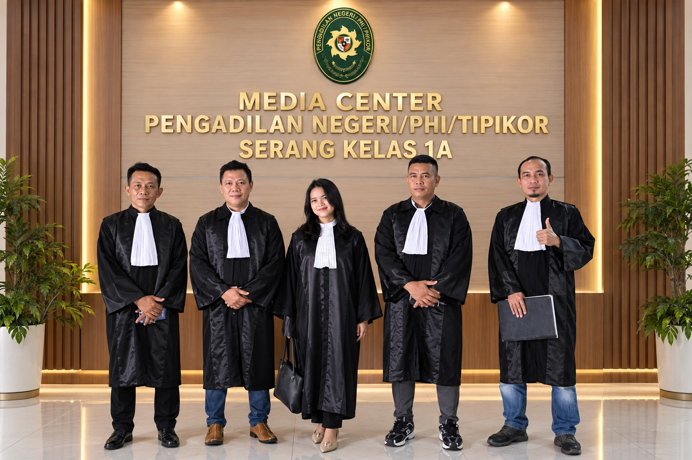
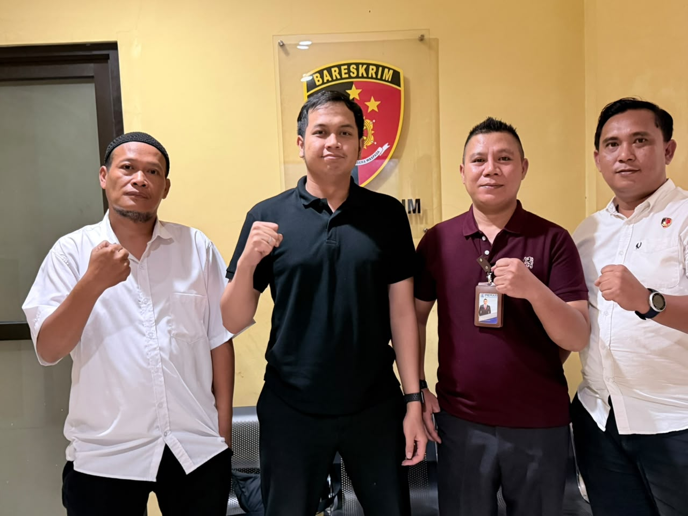

Ari Bintara, M.S., S.H., M.H., CLAAdvokatHubungi
Your Trusted Legal Partner
Tegas dalam hukum.Profesional dalam pendampingan.
ABR & AML Law Firm, pengacara dan advokat di Kota Serang, Banten, hadir untuk memberikan pendampingan hukum yang berintegritas, terukur, dan berorientasi pada penyelesaian terbaik bagi setiap klien.

Bersama untuk pendampingan hukum yang bertanggung jawabABR & AML
IntegritasMenjaga kepercayaan klien
ProfesionalCermat dan bertanggung jawab
Berorientasi SolusiFokus pada kebutuhan hukum
KerahasiaanMenghormati privasi klien

Tentang ABR & AML Law Firm
Mendampingi dengan integritas. Memperjuangkan dengan profesionalisme.
ABR & AML Law Firm merupakan firma hukum yang berkomitmen untuk memberikan layanan hukum yang profesional, berintegritas, dan berorientasi pada perlindungan hak serta kepentingan klien. Kami hadir sebagai mitra hukum bagi individu, pelaku usaha, perusahaan, dan institusi dalam menghadapi berbagai persoalan hukum secara tepat, strategis, dan bertanggung jawab.
Dengan pendekatan yang mengutamakan ketelitian, analisis hukum yang komprehensif, serta pemahaman terhadap kebutuhan setiap klien, ABR & AML Law Firm menyediakan layanan hukum melalui jalur litigasi maupun nonlitigasi. Kami percaya bahwa setiap permasalahan hukum memerlukan penanganan yang cermat, strategi yang terukur, dan solusi yang berlandaskan peraturan perundang-undangan yang berlaku.
Bagi kami, kepercayaan merupakan fondasi utama dalam hubungan profesional dengan klien. Oleh karena itu, kami senantiasa menjunjung tinggi integritas, kerahasiaan, etika profesi, dan kualitas pelayanan dalam setiap penanganan perkara.
ABR & AML Law Firm berupaya menjadi mitra hukum yang dapat diandalkan dalam memberikan pendampingan, perlindungan, serta solusi hukum yang sesuai dengan kebutuhan klien.
Kenali Tim Advokat →Integritas
Bertindak jujur dan menjaga kepercayaan.
Profesionalisme
Analisis yang cermat dan komunikasi jelas.
Kepedulian
Memahami konteks dan kebutuhan klien.
Visi & Misi
Nilai yang memandu setiap perkara yang kami tangani.
VISI
Menjadi firma hukum yang profesional, berintegritas, dan terpercaya dengan mengedepankan keadilan, kepastian hukum, serta perlindungan kepentingan klien melalui layanan hukum yang berkualitas, strategis, dan berorientasi pada solusi.
MISI KAMI
Layanan profesional
Memberikan layanan hukum yang profesional, berkualitas, dan berorientasi pada solusi.
Integritas & kerahasiaan
Menjunjung tinggi integritas, etika profesi, dan kerahasiaan klien.
Perlindungan hak
Melindungi hak dan kepentingan klien berdasarkan hukum yang berlaku.
Penyelesaian strategis
Mengupayakan penyelesaian permasalahan hukum secara efektif dan strategis.
Kepercayaan klien
Membangun kepercayaan melalui pelayanan yang transparan, bertanggung jawab, dan berintegritas.
Layanan hukum
Pilih bidang untuk melihat bantuan yang dapat diberikan tim.
Cara kami bekerja bersama Anda
Empat langkah jelas dari pesan pertama hingga pendampingan.
Ceritakan
Kirim ringkasan singkat persoalan Anda.
Tinjauan awal
Tim mempelajari fakta dan dokumen terkait.
Susun langkah
Kami jelaskan pilihan dan langkah yang tepat.
Pendampingan
Kami mendampingi Anda sepanjang prosesnya.
Di lapangan
Ketuk foto untuk memperbesar.
Wawasan hukum
Panduan singkat untuk persiapan Anda.
Langkah awal saat menghadapi persoalan hukum
Cara mengumpulkan informasi dan menyiapkan konsultasi yang terarah.
Mengapa dokumentasi penting dalam sengketa
Menyimpan dokumen dan kronologi secara tertib sejak awal.
Mengenal hak Anda saat menjalani pemeriksaan
Informasi umum tentang pendampingan oleh advokat.
Pertanyaan umum
Apa yang perlu disiapkan sebelum konsultasi?
Kronologi singkat, identitas para pihak, dan dokumen terkait seperti surat, kontrak, atau bukti pembayaran.
Apakah informasi saya dijaga kerahasiaannya?
Ya. Advokat terikat kewajiban menjaga kerahasiaan informasi klien. Hindari mengirim dokumen sensitif melalui formulir di website.
Apakah saya harus datang ke kantor?
Tim akan mengonfirmasi konsultasi tatap muka atau daring setelah pesan awal Anda kami terima.
Kapan saya dapat menghubungi kantor?
Layanan kami tersedia 24 jam. Anda dapat mengirim pesan melalui formulir atau WhatsApp.
Butuh pendampingan hukum?
Tulis pesan singkat. Kami ubah menjadi pesan siap kirim.
WhatsApp+62 812-6482-4151
Emailaribintaralawyer@gmail.com
Instagram@aribintaralawyeroficialInstagram@amlp_lawfirm
Google MapsBuka lokasi kantor
AlamatJl. Pendidikan, Link. Pelopor No. 01, RT 001/RW 003, Kelurahan Karundang, Kecamatan Cipocok Jaya, Kota Serang, Banten
Jam layanan24 jam